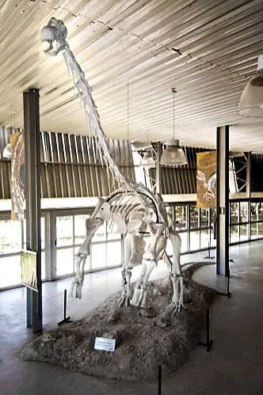

Entre os fósseis e dinossauros mais estudados da Era Mesozoica, o Tyrannosaurus rex destaca-se pela dentição robusta e mordida de alta potência no fim do Cretáceo.
Uberabatitan ribeiroi: dinossauros do Brasil em Uberaba

Titanossauro associado aos achados de Uberaba (MG).
Os dinossauros do Brasil em Uberaba, especialmente na região de Peirópolis, incluem o titanossauro Uberabatitan ribeiroi, um dos maiores saurópodes já descritos no país.
Archaeopteryx lithographica: transição evolutiva
Fóssil preservado em calcário do Jurássico Superior.
Na paleontologia, o Archaeopteryx evidencia a ligação evolutiva entre dinossauros terópodes e aves modernas.
Períodos da Era Mesozoica
Divisão temporal da Era Mesozoica e registros fósseis